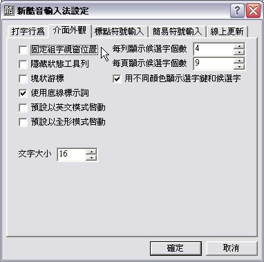

也紀念我們永遠的朋友 李士傑先生（Shih-Chieh Ilya Li）。
新酷音輸入法在 Windows 上的應用技巧
新酷音輸入法原是在 Linux 上相當受歡迎的一個中文注音輸入法，特點是字詞自動選字的正確率頗高（相對於微軟的新注音輸入法），輸入標點符號容易，才會廣受習慣使用注音輸入法者的喜愛。
後來終於在 Windows 底下推出相容的版本，最棒的是，它把其他常見的注音輸入法（如微軟的新注音和自然輸入法）的一些重要功能和相關習慣用法也納入，只要透過幾個設定步驟，不需要更改原先的輸入習慣就能輕鬆的使用，可說是一套能無痛轉移的好軟體！
◎ 下載
新酷音輸入法的下載處：https://chewing.csie.net/download.html
在此可以選擇各個作業系統適用的版本，請大家根據需要自行選擇。不過可下載的版本頗多，選用時可要注意看。如在 Windows 平台下，目前的最新版本是0.3.4.8，既不是在最上面，也不是在最下面……總之，下載前要仔細的看哦！
◎ 設定中英文切換
小至搜尋資料，大至文章寫作，都有可能要同時輸入中文和英文，如果只是要輸入一個或數個字母，按住 Shift 鍵輸入就可以了。至於大小寫，新酷音輸入法在這種情況下輸入的是小寫，微軟新注音和自然輸入法則是大寫，因此若需要大小寫兼具，那麼快速切換中英文輸入狀態，是不可不知的功能。
在微軟的新注音輸入法，只要按一下鍵盤的 Shift 鍵，就可以轉換成英文的輸入狀態；但著名的自然輸入法卻是按鍵盤的 Caps Lock 鍵（大寫上鎖鍵）。那該設成哪一種好呢？其實要看大家的習慣而定。不過，我個人比較建議大家設定為 Shift 鍵，因為切換為英文輸入狀態時，突然發現必須輸入一堆大寫字母，這時可以再按一下 Caps Lock 鍵就可以了，以便省去切換輸入法的麻煩。
步驟一
安裝新酷音輸入法後，按鍵盤的 Ctrl + space（空白鍵），可以切換到新酷音輸入法。如果電腦內安裝的輸入法很多，那麼可以按鍵盤的 Ctrl + Shift 鍵依序切換，直到出現新酷音輸入法為止。接著按一下輸入法上最右邊的「新酷音輸入法設定」鈕。
步驟二
此時會出現選單，點選最下方的「設定新酷音輸入法」。
步驟三
在「打字行為」的標籤下，我們可以看到二個和設定切換中英文有關的設定，預設值是使用 Shift 鍵，如果大家先前習慣的是自然輸入法的 Caps Lock 鍵，那在這兒就可以根據自己的習慣來修改。
◎ 改變組字視窗的位置和顯示文字的大小
組字視窗，也就是當我們要選字時所出現的候選字視窗。改變組字視窗的位置，目的是在選字時，方便自己檢視候選字的內容。通常組字視窗出現的方式有二種，一種是固定在特定的位置，在輸入的時候，眼睛就可以只看一個地方就好，不必因輸入位置而變動，增加搖頭晃腦的機會；另一種則是組字視窗跟著文字，好處是能和編輯文字同位置檢視。二者的優點恰好也是對方的缺點，想選用哪一個方式，得視個人的習慣而定，沒有絕對的好壞。
至於顯示文字的大小，這對於視力方面有些許不方便，需要大一點才看的清楚的朋友很有幫助（像我一位弱視的朋友就很需要），如果有這樣的朋友，就請幫他設定大一點的字吧！
步驟一

同樣在設定視窗中，切換到「介面外觀」。如果勾選「固定組字視窗位置」，那麼組字視窗就會固定在一個特定的地方，而不是跟隨在輸入內容的地方。
至於二者的差異，請參考下面的二張圖。
步驟二
至於想要變更組字視窗內的文字大小，那就修改一下底下文字大小的數值，如此組字視窗內的文字就會根據設定值而變大或變小。
◎ 輸入標點符號或特殊符號
新酷音輸入法要輸入常用的標點符號並不難，只要按住 Shift 鍵，再按一下鍵盤上含有各個標點符號的按鍵即可。不過這些符號僅限於英文也有用的部份，一些中文特有的全形標點符號或特殊符號，就得靠輸入法的特定功能囉！
步驟一
輸入特定符號前，按一下鍵盤上的「、」鍵（上面還有「～」這個符號，在標準鍵盤的左上角），就會出現上圖的視窗，這時可以根據自己的需要選擇想輸入的東西，這裡我們按一下鍵盤的 3，選擇常用符號當作範例。要注意的是，最後面的的 1/2 是指內容有兩頁，目前在第一頁。若要切換，可使用鍵盤上的向下鍵。
步驟二
這時會出現新的視窗，我們就可以根據需要選擇要輸入的特定符號囉！（別忘記，這裡共有四頁可以用，實際內容請大家自行探索囉！）
〔補充說明〕
有些中文符號是具有多樣性的，如引號和括號，但是在鍵盤上卻沒有那麼多按鍵可以用。使用前面的技巧似乎也不快，那該怎麼辦？這時候只要把向下鍵按下去就對啦！這時候就會出現和相關的符號，選起來當然比較快囉！
◎ 斷字技巧
輸入句子的時候，常常會遇到有些字和前面的可以組成一個常見的詞，跟後面的也可組一個常見的詞，於是就會變成很爆笑的內容啦！這時候可以善用斷字的技巧來提昇效率，不需要只使用選字功能，有時候找字可是會找個半死！
步驟一
出現和前後字都能組成一個詞的字之後，把游標移到他的前面，以上圖為例，就是「見」這個字前面。
步驟二
這時候按一下 Tab 鍵，讓輸入法知道從什麼地方分開，以便正確的選字。
◎ 把自己常用的詞加入詞庫
輸入自己的名字，選字鮮少會正確的。雖然只要多輸入個幾次，新酷音是會記住，不過這個「多輸入幾次」，恐怕是會讓人等得心焦的次數。
這個時候最好的方法就是把自己的名字加入詞庫啦！這樣子就不用癡癡的等著新酷音記住。當然，新酷音內沒有列入的成語、流行語、詞語等，可以根據自己的需要自行加入。只是，千萬別亂加非正式用法的詞語，因為這很容易讓新酷音混淆，反而會降低日後的選字正確率喔！
步驟一
按一下「新酷音輸入法設定」的按鈕，從出現的清單中點選「編輯使用者詞庫」。
步驟二
這時候就會開啟「詞庫編輯工具」。在功能左邊的欄位中，使用新酷音輸入法（用其他的輸入法不行喔！）打出想加入的詞語，記得要選好正確的字之後才按Enter完成輸入，最後才按一下「新增詞彙」鈕。
〔注意！〕
自建詞庫時，必須一次就完成整個詞彙的輸入，不可一字一字的輸入。一次打出所有的字，全部選好字之後才按 Enter 完成輸入，這樣日後新酷音才能根據打進去的注音符號內容選擇正確的字。
步驟三
接下來還得要加入目前使用的詞庫，新加入的詞才能使用，所以按一下「存入使用者詞庫」鈕。
步驟四
此時會出現一個對話視窗，主旨是要使用者確認要以目前編輯的檔案來取代使用中的檔案。按一下「是」，並等載入完畢就可以了。
〔補充資料〕
上述的方法雖然比較麻煩，不過過程嚴謹，比較不會出錯。如果要快速儲存詞語到詞庫，可在輸入文字時，按 Ctrl + 2，就可以建立二個字的詞；Ctrl+3，就可以建立三個字的詞；Ctrl+4 就可以建立四個字的詞。儲存時分別是以游標往前數 2、3、4 個字。
◎ 另存詞庫檔與匯入詞庫檔
古人說：「天有不測風雲」，今人 Attila 說：「電腦有旦夕系統重建的危險」。如果有一天需要系統重建，或者換新電腦，那過去辛苦建立的詞庫，不就得重新再建立一次？要避免這種苦命劇情發生在自己身上，最好的方法還是平常要養成備份的好習慣啦！新酷音輸入法就可以把建立好的詞庫另外存檔，自己再把它加以備份，改天要用的時候，再把它匯入就好啦！這樣才會省時省力，永久流傳使用！
步驟一
開啟詞庫編輯工具後，按一下「另存成新檔」的按鈕。
步驟二
在開啟的「另存新檔」視窗中，選擇要儲存的資料夾並輸入檔名，然後按一下「儲存」鈕就可以了。
步驟三
一樣是先開啟詞庫編輯工具，然後按一下「匯入詞庫檔」。
步驟四
在「開啟」視窗中，選擇存放檔案的資料夾，點選要匯入的檔案後按「開啟」。
步驟五
此時會出現一個對話視窗，提醒大家要執行「存入使用者詞庫」這個功能。按一下「確定」，就完成檔案的載入。
步驟六
檔案載入後，並沒有取代目前使用的詞庫檔，必須再按一下「存入使用者詞庫」的鈕，才算完成備份檔案內容的更新。
輸入法是使用電腦時不可不用的東西，選擇一個有效率，自己又用得很順手的輸入法是很重要的事。雖然相關的技巧不多，不過以上的「招數」，應該會對大家有點幫助的啦！祝大家輸入文字愉快！
專欄總覽


E-Mail：contact@openfoundry.org Address：台北市南港區研究院路2段128號 中央研究院資訊科學研究所 . 隱私權條款. 使用條款